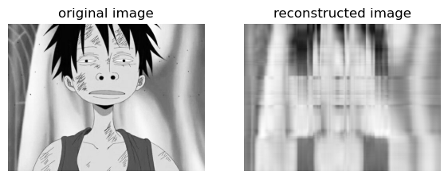
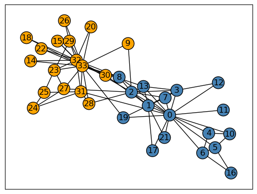
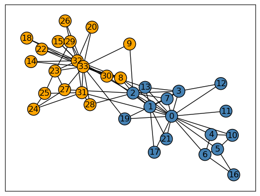
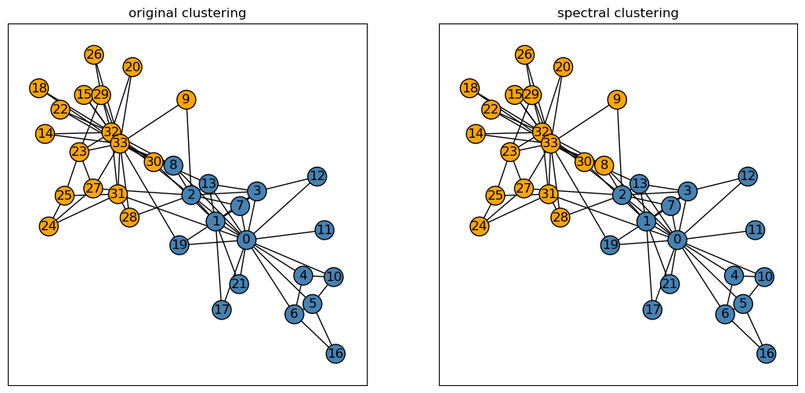

%load_ext autoreload
%autoreload 2Singular Value Decomposition (SVD)
Singular value decomposition (SVD) is another form of dimensionality reduction and matrix factorization similar to principal component analysis (PCA) as we’ve explored in previous lectures.
Recall that the SVD of a matrix \(A\) is:
\[A = UDV^{T}\]
where \(U\in\mathbb{R^{mxm}}\) and \(V\in\mathbb{R^{nxn}}\) are orthogonal matrices. The singular values of \(D\in\mathbb{R^{mxn}}\) along its diagonals overall convey some measure of how big \(A\) is. By manipulating the singular values of \(D\), we can reconstruct the matrix \(A\) from \(U\), \(V\), and \(D\).
Utilizing SVD allows us to make approximations using a smaller representation of the original matrix; in turn, we can use this approximation in applications with images through image compression!
Thus, in this blog post, we’ll make use of SVD to compress images and analyze the effect of varying singular values of \(k\) in assessing efficient storage use for large images on computers with minimal storage.
For my RGB image, I’ve chosen a scene from one of my favorite animes, One Piece, with Luffy as the main character shown below.

from matplotlib import pyplot as plt
import numpy as np
import PIL
import urllib
def read_image(url):
return np.array(PIL.Image.open(urllib.request.urlopen(url)))url = "https://i.pinimg.com/550x/23/e4/e7/23e4e7aa8e7a9e2dbc75fece9d77fc99.jpg"
img = read_image(url)First, I’ll read my image using the read_image function which takes in an image url and converts the image as an np array. In doing so, we can represent the image in its RGB dimensions and convert the image to a greyscale image for SVD image compression.
fig, axarr = plt.subplots(1, 2, figsize = (7, 3))
def to_greyscale(im):
return 1 - np.dot(im[...,:3], [0.2989, 0.5870, 0.1140])
grey_img = to_greyscale(img)
axarr[0].imshow(img)
axarr[0].axis("off")
axarr[0].set(title = "original Luffy")
axarr[1].imshow(grey_img, cmap = "Greys")
axarr[1].axis("off")
axarr[1].set(title = "greyscale Luffy")
plt.show()
Implementation
Here is the source code for my function svd_reconstruct: SVD
Desired Compression Factor and Epsilon Threshold
from svd import SVD
k = 5
SVD_ = SVD(grey_img, k)
# From lecture notes
def compare_images(A, A_):
fig, axarr = plt.subplots(1, 2, figsize = (7, 3))
axarr[0].imshow(A, cmap = "Greys")
axarr[0].axis("off")
axarr[0].set(title = "original image")
axarr[1].imshow(A_, cmap = "Greys")
axarr[1].axis("off")
axarr[1].set(title = "reconstructed image")
img_, storage = SVD_.svd_reconstruct(grey_img, k) # Call function to reconstruct image
compare_images(grey_img, img_)
SVD_.img, SVD_.k(array([[ -55.2239, -64.9779, -71.1775, ..., -74.0051, -74.0051,
-74.0051],
[ -59.9954, -67.3367, -71.0635, ..., -74.0051, -74.0051,
-74.0051],
[ -69.8373, -73.9339, -74.205 , ..., -73.7771, -73.7771,
-73.7771],
...,
[ -76.8007, -76.8007, -82.8432, ..., -204.2167, -197.2174,
-192.2179],
[ -76.8007, -76.8007, -82.8432, ..., -208.6184, -201.6191,
-196.6196],
[ -76.8007, -76.8007, -82.8432, ..., -210.6182, -202.619 ,
-198.6194]]),
5)
# Experimenting with
SVD_ = SVD(grey_img, k = 5)
SVD_.svd_experiment()
Experiment
# SVD.svd_experiment(grey_img, k)Desired Compression Factor
Experiments
Varying k Singular Values
Calculating Total Storage for Compressed Image
Laplacian Clustering
import networkx as nx
np.random.seed(12345) # For reproducibility
# From lecture notes to generate karate club graph
G = nx.karate_club_graph()
layout = nx.layout.fruchterman_reingold_layout(G)
clubs = nx.get_node_attributes(G, "club")
nx.draw_networkx(G, layout,
with_labels=True,
node_color = ["orange" if clubs[i] == "Officer" else "steelblue" for i in G.nodes()],
edgecolors = "black" # confusingly, this is the color of node borders, not of edges
) 
def spectral_clustering(G):
'''
Input: Graph G
Output: Vector of binary labels to split graph
'''
# Extract adjacency matrix from graph G
A = nx.adjacency_matrix(G).toarray()
# Symmetrize the matrix
A = A + A.T
A[A > 1] = 1
# D is the matrix sum of the diagonal of the adjacency matrix
D = np.diag(np.sum(A, axis = 1))
# Generate the normalized Laplacean matrix
L = np.linalg.inv(D) @ (D - A) @ np.linalg.inv(D)
# Using np.linalg.eigh to return eigenvalues and eigenvectors in ascending order
eig_val, eig_vec = np.linalg.eigh(L)
z_ = eig_vec[:, 1] # Obtain the eigenvector with second smallest eigenvalue of L
return 1*(z_ > 0)# Generate our cluster labels
# 0: Mr. Hi, 1: Officer
cluster_labels = spectral_clustering(G)# Plot our karate club graph with spectral cluster labels
nx.draw_networkx(G, layout,
with_labels=True,
node_color = ["orange" if i == 1 else "steelblue" for i in cluster_labels],
edgecolors = "black") 
# Plotting each graph side by side
fig, axarr = plt.subplots(1, 2, figsize = (13,6))
# Original graph on the left subplot
nx.draw_networkx(G, layout,
with_labels=True,
node_color = ["orange" if clubs[i] == "Officer" else "steelblue" for i in G.nodes()],
edgecolors = "black",
ax = axarr[0])
# Spectral graph on the right subplot
nx.draw_networkx(G, layout,
with_labels=True,
node_color = ["orange" if i == 1 else "steelblue" for i in cluster_labels],
edgecolors = "black",
ax = axarr[1])
# Set graph titles
axarr[0].set(title = "original clustering")
axarr[1].set(title = "spectral clustering")
# Show the plot
plt.show()